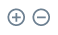

Technical Dashboard page
To access the Technical Dashboard page, click TECHNICAL OPS > Overview in the left-hand navigation pane.
Service graphs
The graphs of the various services (party lookup, quotes, transfers) display visual information about the following:
-
service rate over a selected period of time > shown as Requests/sec on the graph
The Requests/sec line shows the per-second rate of requests over the past 24 hours or any other time period specified in the Select Monitoring Time drop-down field. Data is captured, and the average "rate of requests" is worked out at every 10-minute mark. Those averages are then aggregated for the specified time period. -
service average response time over a selected period of time > shown as Latency ms on the graph
Latency ms values are calculated by looking at service requests and inspecting what latency range they fall in (for example, 10-500ms, 500-1000ms — these are just examples for illustration purposes). For each request, a counter corresponding to the range that the request fell in is incremented. The average latency is worked out at every 10-minute mark based on "latency ranges" and their counters. Those averages are then aggregated for the time period specified in the Select Monitoring Time drop-down field.
| The y axis range is calculated based on the data in the result set. It adjusts to give a sensible minimum/maximum. |
First, specify the period of time that you want to examine. Choose a time period from the Select Monitoring Time drop-down field.
Then, click the Outbound or Inbound tab depending on whether you want to look at the data of outgoing or incoming transactions.
Look at the graph of the service that you are interested in.
The granularity of the graph is customizable. For example, you can zoom in on areas of interest and find out the timestamps of requests that seem not to have been successful.
To be able to zoom, you must be in selection zoom mode. Ensure you have the Selection Zoom button  selected. This is the default setting.
selected. This is the default setting.
Click the Zoom In or Zoom Out buttons  to zoom in or out. To zoom in on a particular area of the graph, select an area by clicking the graph, drag the mouse left or right, and release the mouse.
Click the Reset Zoom button  to reset the timeline to the original 24-hour granularity.
to reset the timeline to the original 24-hour granularity.
Another way to change the displayed range of the timeline is to pan an area. Click the Panning button  , then click the timeline and drag your mouse to the left or right. Panning keeps the selected zoom granularity and lets you move along the X (time) axis.
, then click the timeline and drag your mouse to the left or right. Panning keeps the selected zoom granularity and lets you move along the X (time) axis.
To return to selection zoom mode, click the Selection Zoom button  .
.
To download a chart in .svg or .png format, click the Menu button  .
.